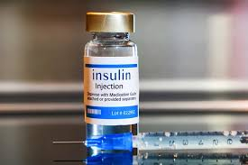

Introduction
Diabetes is a chronic health condition that affects how your body turns
food into energy. It occurs when the body cannot produce enough insulin
or cannot use insulin effectively. Insulin is a hormone that helps
glucose (sugar) enter the cells to be used for energy. Without proper
insulin function, blood sugar levels rise, which can lead to serious
health problems over time.
Types of Diabetes
Type 1 Diabetes: The immune system attacks
insulin-producing cells in the pancreas. People with Type 1 diabetes need
insulin injections to survive.
Type 2 Diabetes: The body does not use insulin properly
(insulin resistance). It is the most common type and can often be managed
with lifestyle changes and medication.
Gestational Diabetes: Occurs during pregnancy and usually
disappears after birth, but increases the risk of developing Type 2
diabetes later.
Causes of Diabetes
Genetics: Family history can increase risk.
Obesity: Excess body fat affects insulin use.
Sedentary Lifestyle: Lack of physical activity can
contribute to Type 2 diabetes.
Poor Diet: High sugar and processed foods increase risk.
Autoimmune Issues: For Type 1 diabetes, the immune system
attacks the pancreas.
Symptoms of Diabetes
Frequent urination
Excessive thirst
Extreme hunger
Fatigue
Blurred vision
Slow-healing sores
Treatment and Medications
treatment focuses on controlling blood sugar levels to prevent
complications:

Insulin Therapy:
Essential for Type 1 diabetes and sometimes for Type 2.
Oral Medications:
Such as Metformin, which helps improve insulin sensitivity.
Lifestyle Changes:
Healthy diet, regular exercise, maintaining a healthy weight.

Monitoring:
Regular blood sugar checks are vital to manage the condition.
Devices for Diabetes Management
Glucometer:
Measures blood sugar levels at home.
Continuous Glucose Monitors (CGM):
Provide real-time blood sugar data.
Insulin Pumps:
Deliver insulin continuously for those who need it.